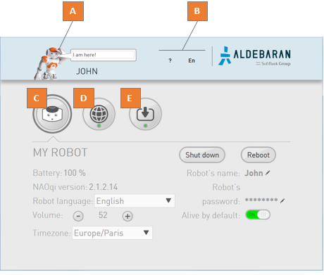
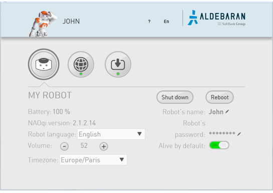

See also: Accessing the NAO Web page.
| Part | Name | Allows you to ... |
|---|---|---|
| A | NAO picture | Make your NAO say a short sentence:
|
| B | ? menu | Open:
|
| EN menu | Choose another language for the current web page. | |
| C | My robot | Display and set the general settings of the robot. |
| D | Network settings | Set the connection to the network. |
| E | Updates | Set and manage the link to the Aldebaran Cloud. |
My robot section displays the main settings of the robot.
| Name | Description |
|---|---|
| Battery | Displays the current level of the battery. |
| NAOqi version | Displays the version currently running on NAO. |
| Robot language | List of languages installed on NAO. Allows you to select the Language currently used by NAO. Note: Avoid setting Robot language while Autonomous Life is on. For further details see: Switching Autonomous life on and off. |
| Volume | Allows you to set the volume. |
| Timezone | Allows you to set the time zone. This setting is required for the WiFi connection. |
| Shut down button | Allows you to shut down your NAO. |
| Reboot button | Allows you to reboot NAO. |
| Robot’s name | Allows you to set the name of your NAO. |
| Robot’s password | Allows you to set the password of your NAO. |
| Alive by default | Allows you to enable or disable the Autonomous Life at startup. Warning: if you disable Autonomous Life at startup, your NAO will remain static, and you will not be able to chat or launch activities by voice. For further details, see: Autonomous Life. |